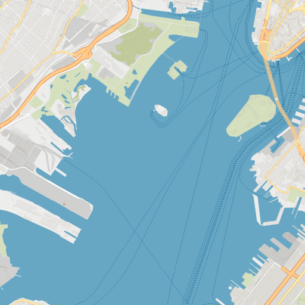
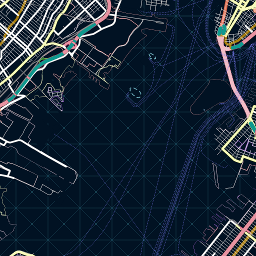
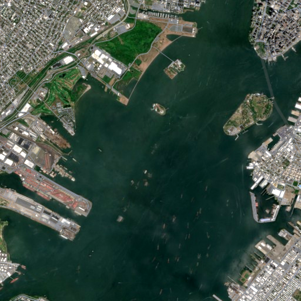
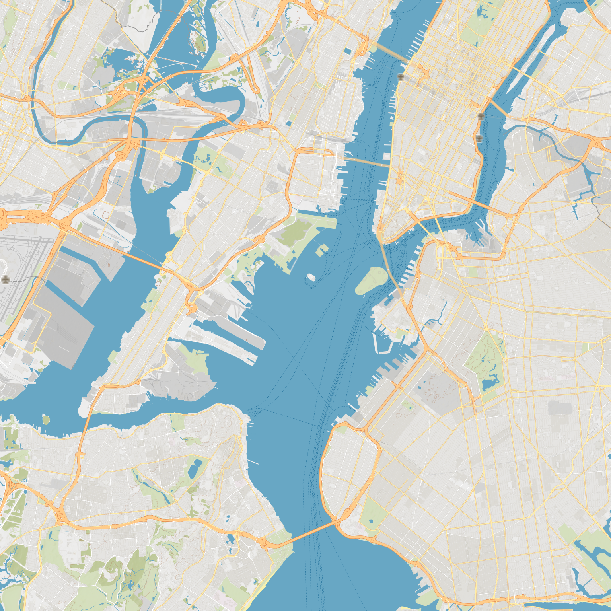

From input to output
Rendering process
Rentile separates style preparation, resource acquisition, and drawing. This walkthrough follows one nine-tile XYZ batch through those boundaries and shows the PNG files returned at the end.
Step 1
Create the renderer
The host supplies a ResourceTransport for network exchanges and a
RawResourceStore for validated source bytes. Rentile owns the rendering
workers and native drawing resources behind one BasemapRasterizer.
val rasterizer = Rentile.create(
RentileConfiguration(
transport = AppResourceTransport(httpClient),
rawResourceStore = AppRawResourceStore(cacheDirectory),
)
)AppResourceTransport and AppRawResourceStore represent adapters
implemented by the host application.
Step 2
Prepare the map style once
prepare acquires the style through the configured transport, validates it
against the compatibility policy, and compiles a reusable PreparedStyle.
Invalid or unsupported retained constructs fail here instead of producing an incomplete map.
val style: PreparedStyle = rasterizer.prepare(
StyleInput.Remote("https://example.com/style.json")
)Step 3
Describe the required XYZ tiles
This example requests a contiguous 3×3 region at zoom 12. Each TileId is one
north-up XYZ output tile; the list order does not change its geographic identity.
12/1204/1539
12/1205/1539
12/1206/1539
12/1204/1540
12/1205/1540
12/1206/1540
12/1204/1541
12/1205/1541
12/1206/1541
val requestedTiles = buildList {
for (y in 1539..1541) {
for (x in 1204..1206) {
add(TileId(z = 12, x = x, y = y))
}
}
}Step 4
Prepare a network-free render batch
prepareBatch plans the requested outputs, acquires and validates their raw
resources, and freezes the complete drawing input. When it returns, each tile has a stable
content key and render no longer needs the transport or raw-resource store.
rasterizer.prepareBatch(
style = style,
tiles = requestedTiles,
options = RenderOptions(outputSizePx = 512),
).use { batch ->
batch.contentKeys.forEach { (tileId, contentKey) ->
println("$tileId will render as $contentKey")
}
// Drawing happens inside this prepared boundary.
}
The prepared batch is an AutoCloseable resource owner. Keep it open while
rendering and close it with use when the batch is no longer needed.
Step 5
Draw and save the individual PNG tiles
render draws the prepared tiles on the CPU and encodes each successful output
as PNG. The operation is all-or-error: a successful RenderBatch contains every
requested result, including its TileId, pngBytes, content key, and
sanitized diagnostics.
try {
val style = rasterizer.prepare(
StyleInput.Remote(styleUrl)
)
rasterizer.prepareBatch(
style = style,
tiles = requestedTiles,
options = RenderOptions(outputSizePx = 512),
).use { batch ->
val result: RenderBatch = rasterizer.render(batch)
result.tiles.forEach { tile ->
savePng(
name = "${tile.id.z}-${tile.id.x}-${tile.id.y}.png",
bytes = tile.pngBytes,
)
}
}
} finally {
rasterizer.close()
rasterizer.awaitClosed()
}The same center tile with different styles
Style preparation changes the drawing program; the requested XYZ coordinate and PNG output contract remain the same.

Topographic vector

Dark vector

Satellite raster
Output placement
Place PNGs by their tile coordinates
Rentile returns nine independent 512×512 PNGs for this request. The caller places them in XYZ order to form the 1536×1536 image below. The grid overlay identifies the original tile boundaries; mosaic composition itself is outside the Rentile API.

TileId for placement and the returned
contentKey for caller-owned output caching. Do not infer placement from the
order in which asynchronous work completed.